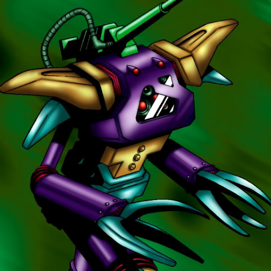

Cannon Soldier

Description: "Can enter labyrinth squares, and transforms the occupied space into NORMAL terrain."
STATS
ATK: 1400
DEF: 1300DECK COST
Deck Cost per Card: 32EFFECT NOT IMPLEMENTED
Fusion List (11 Possible Fusions)
- Cannon Soldier + Baby Dragon = Metal Dragon
- Cannon Soldier + Blackland Fire Dragon = Metal Dragon
- Cannon Soldier + Darkfire Dragon = Metal Dragon
- Cannon Soldier + Dragon Zombie = Metal Dragon
- Cannon Soldier + Hibikime = Cyber Soldier
- Cannon Soldier + Lesser Dragon = Metal Dragon
- Cannon Soldier + Little Chimera = Dice Armadillo
- Cannon Soldier + Milus Radiant = Dice Armadillo
- Cannon Soldier + Obese Marmot of Nefariousness = Dice Armadillo
- Cannon Soldier + One-Eyed Shield Dragon = Metal Dragon
- Cannon Soldier + Petit Dragon = Metal Dragon